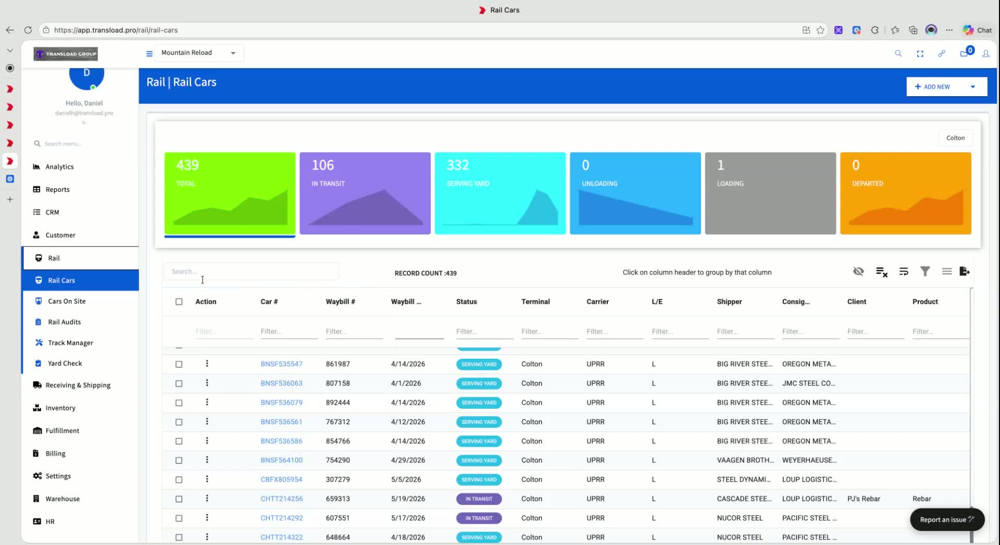
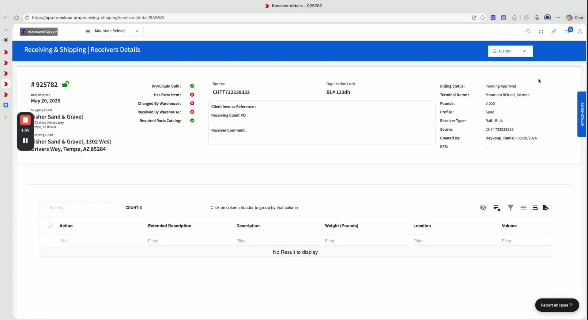
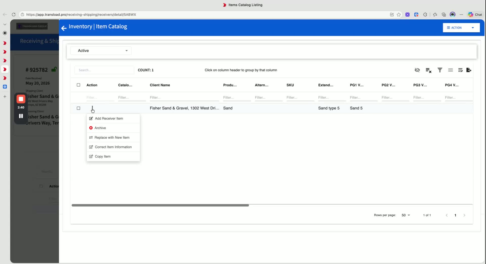
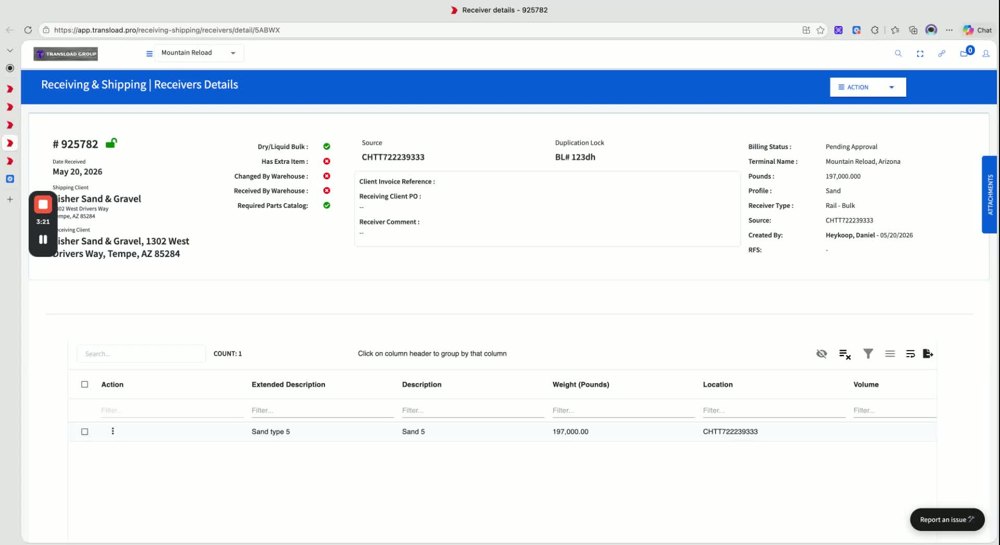
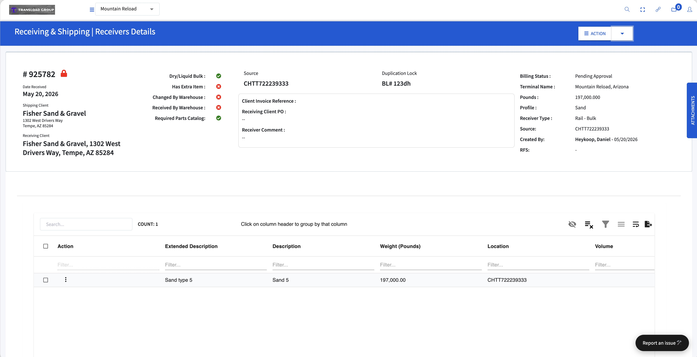
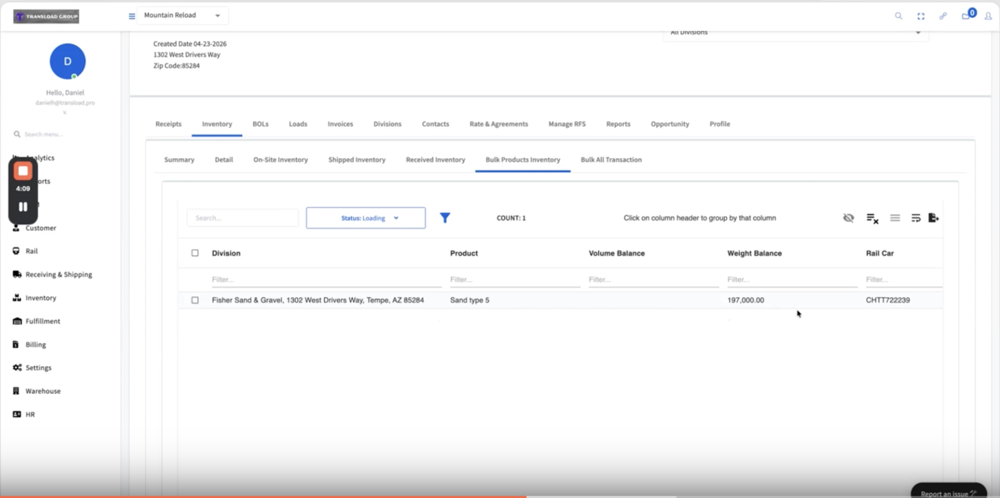
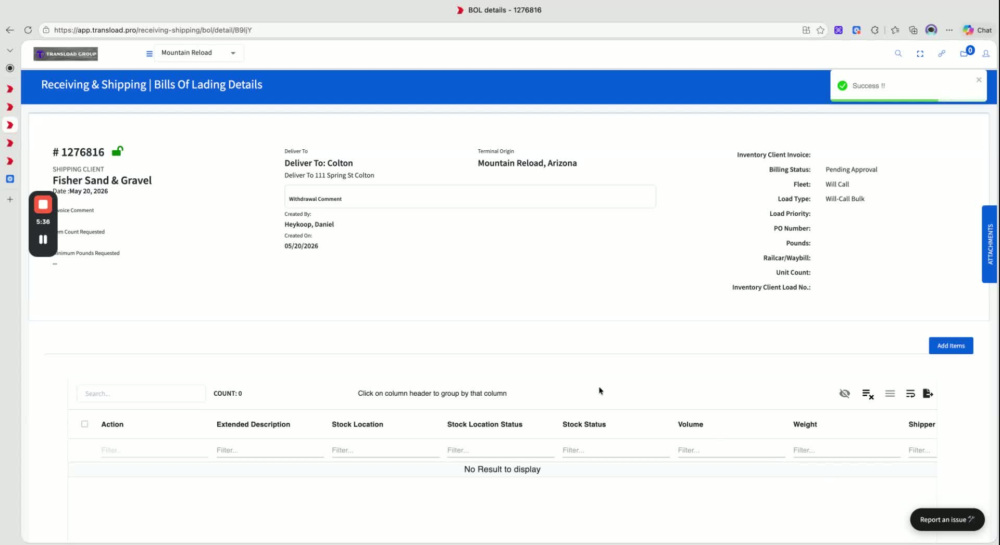
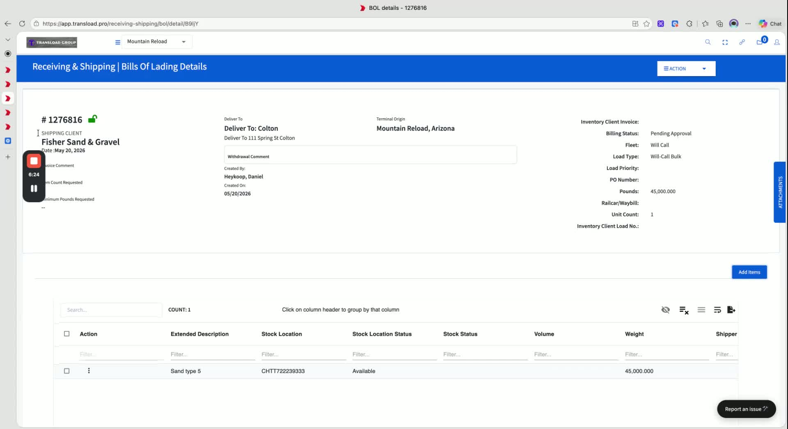
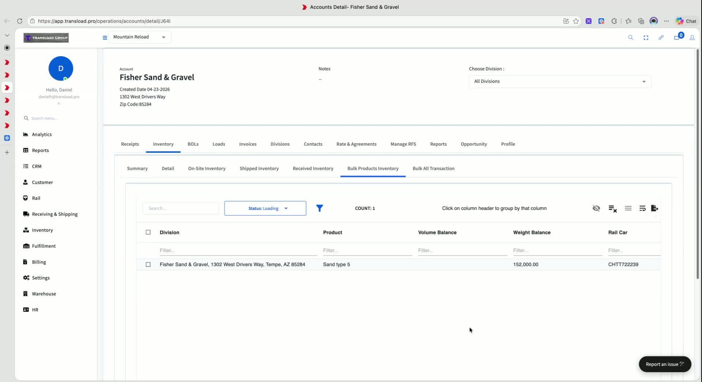

How to Set Up and Use Dry Bulk Inventory
Receiving bulk material from a rail car and shipping it back out on a will-call truck. Walkthrough recorded for Mountain Reload, May 2026.
▶ Watch the full Loom (≈ 7 min)Before you start — three things must be true
- The rail car is on site — check Rail → Rail Cars for the "Serving Yard" or "Unloading" count.
- The receiver type is set to rail bulk (not just rail).
- The bill of lading load type is set to bulk.

Create a bulk receiver header
Add a new receiver, choose Rail Bulk as the type, pick the on-site car, and save.

- Start by creating a new receiver for the site you want to use.
- Choose the correct origin / site (example: Phoenix / Fisher).
- Set the receiver type to Rail Bulk instead of the standard rail receiver type.
- Select the railcar that is physically on site and unloading.
- Choose the appropriate bulk profile (example: Sand and Gravel / BOL profile).
- Save the receiver header.
- Once saved, the receiver should display bulk-specific fields such as description, weight, and volume instead of standard item fields.
Use the item catalog for bulk receiver details
Bulk receivers source detail rows from the item catalog — manual entry and import should be disabled.

- For dry bulk, the system should use the item catalog rather than standard receiver detail entry.
- The bulk workflow should rely on a catalog record tied to the receiver / origin.
- Example catalog setup:
- Item name:
Sand - Extended description:
Sand Type 5 - Required product group / code:
PG1
- Item name:
- In the bulk process, the system should gray out manual receiver detail entry and import options so users are guided to the catalog.
Add the bulk inventory into the receiver
One record per railcar, in the right unit — weight for dry bulk, volume for liquid.

- Add the bulk item to the receiver.
- Enter the quantity using the correct unit for the bulk type:
- Weight for dry bulk
- Volume for liquid bulk
- Example used: 197,000 pounds for one railcar.
- The default assumption is one record per railcar.
- If multiple records are needed, the quantities should be combined and handled through the bulk inventory logic — talk to the office before doing this.
Lock the receiver to finalize on-hand inventory
Locking confirms the material is physically on hand and posts it to inventory.

- After the bulk material is received, lock the receiver.
- Locking confirms the inventory is now physically on hand.
- Once locked, the receiver becomes a finalized inventory record.
- You can then review the account inventory to confirm the bulk product balance.
Review bulk inventory balances
Open the account inventory and check Book Products to confirm the receiver posted correctly.

- Open the account inventory and view bulk products.
- You should see the received bulk item listed with its current balance.
- Example shown:
- Fisher Sand and Gravel
- Sand Type 5
- 197,000 lb balance
Create an outbound bill of lading for bulk material
Bulk load type tells the system to draw from bulk inventory instead of item inventory.

- To ship bulk material out, create a new bill of lading.
- Select the correct terminal (example: Phoenix).
- Choose a load type that indicates the shipment is bulk.
- This load type tells the system to use bulk-specific detail search and entry.
- Set the inventory source and delivery context as needed (example: will call / outbound bulk).
Add bulk items to the bill of lading
Filter to dry bulk, pick the item, enter the shipped quantity, submit.

- Open the bill of lading and add items.
- Filter for the correct bulk category:
- Dry bulk for sand / gravel
- Liquid bulk if applicable
- Optionally filter to positive balances only.
- Select the bulk item from inventory (example:
Sand Type 5). - Enter the outbound quantity (example: 45,000 pounds).
- Submit the line to create the bill of lading detail.
Confirm the inventory balance updates after shipment
Sanity-check the math: the bulk balance should drop by exactly the shipped quantity.

- Return to the account inventory and check the bulk product balance.
- The shipped quantity should be deducted from the on-hand amount.
- Example result:
- Starting balance: 197,000 lb
- Shipped: 45,000 lb
- Remaining balance: 152,000 lb
- This confirms the dry-bulk outbound process is working correctly.
Key rules for the dry bulk workflow
If a step doesn't behave as expected, run down this checklist.
- The railcar must be on site before it can be unloaded.
- The receiver profile must be a bulk receiver type.
- The bill of lading load type must also be a bulk type.
- These settings control which inventory details the system searches and displays.
- The overall workflow:
- Receive bulk material into a railcar
- Lock the receiver
- Review bulk inventory
- Create an outbound bulk bill of lading
- Verify the inventory balance updates